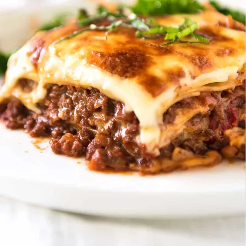

Lasagne

Description
Amazing lasagne? No-Brainer!
Ingredients
- 4 zucchini
- 1 ½ cups homemade or store-bought tomato sauce
- ⅔ cup shredded mozzarella cheese
- 1 ½ cups bechamel sauce
- 1 cup grated Parmigiano Reggiano cheese
- ¼ cup fresh basil, chopped
Steps
- Preheat oven to 190C (375F).
- Cut 1/4-inch thick slices of zucchini lengthwise
- Pour 2 tablespoons tomato sauce on the bottom of a baking dish.
Arrange zucchini slices in a single layer, slightly overlapping, over tomato sauce.
- Top with a thin layer of mozzarella, 1/3 of the bechamel (see Editor's Note),
1/3 of remaining tomato sauce, 1/3 of the Parmigiano Reggiano cheese, and 1/3 of the basil.
Repeat layers, topping with bechamel and Parmigiano Reggiano cheese.
- Bake in the preheated oven until sauce is bubbly and the top is golden brown, about 35 minutes.
Allow to set until remaining liquid is absorbed, about 10 minutes.
This recipe was originally found here
:)
Back to recipes